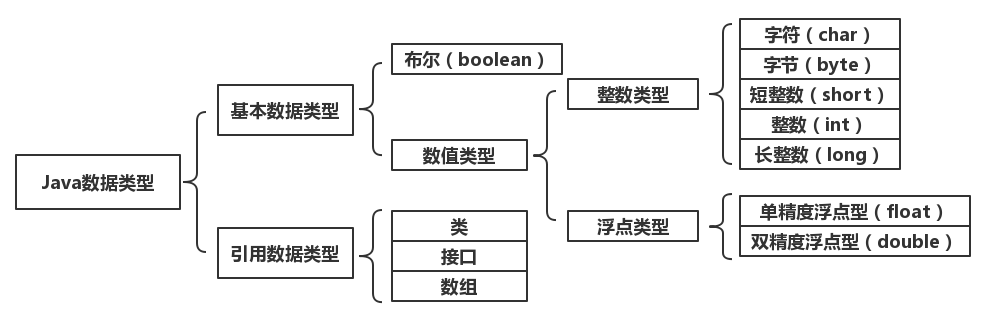

不管哪种编程语言，都会有数据类型，这给程序很好的提供了数据基础。Java的数据类型如图，我们在这里谈谈Java的基本数据类型。
根据补码的规则，我们就可以理解不同位数能存储的数据的范围（不明白看看这篇文章：神奇的补码），整型用于表示没有小数部分的数值，它可以是负数。整型的范围与平台无关，因为不同平台的Java虚拟机中数据类型位数是一样的。
Java整型常数的三种表示形式
public class Demo01 {
public static void main(String[] args) {
int a = 99;
int b = 073;
int c = 0xf1;
System.out.println(a);// print: 99
System.out.println(b);// print: 59
System.out.println(c);// print: 241
}
}
Java语言整数默认为int类型，声明long类型的时候赋值超过int的范围时，要在数值后面加‘l’或者‘L’，例如：
public class Demo02 {
public static void main(String[] args) {
long a = 66666;
// long b = 6666666666; 报错
long c = 6666666666L;
System.out.println(a);// print: 66666
System.out.println(c);// print: 6666666666
}
}
用于表示小数的数据类型,浮点数的原理,就是二进制的科学计数法。
以2.19345×105为例介绍下面概念：
尾数：.19345
指数：5
基数：10
float类型为32位（与int相同），其中1位为符号位，指数为8位，尾数为23位。需要强调的是float的精度是23位（即能精确表达23位的数，超过就被截了）。小数是以尾数长度来表示精确度的，比如pi=3.14，它的精度是2位，pi=3.1415，它的精度就为4位。所以，int的精度比float要大，因为int的精度是31位，但是，int的范围没有float大。
通过以下代码来看浮点数特点：
public class Demo03 {
public static void main(String[] args) {
int a = 0x7fffffff;
int b = 0x7ffffff0;
float fa = a;
float fb = b;
System.out.println(fa); //print: 2.14748365E9
System.out.println(fb); //print: 2.14748365E9
System.out.println(a==b); //print: false
System.out.println(fa==fb); //print: true
}
}
因为将int型的a和b赋值给float型的fa和fb精度会丢失，如图所示。
float因为精度过低，所以一般很少使用，一般我们会使用double。double类型能表示64位，其中1位符号位，11位指数，52位尾数。double精度比int精确，但是不如long，double的范围要大于long。和之间一样，浮点数的字面量默认是double，double的后缀是D和d，float的后缀是F和f，如下所示，编译注释的部分会出错，原理同int和long。
public class Demo04 {
public static void main(String[] args) {
// float a = 123.123;
float b = 123.123f;
double c = 123.123;
double d = 123.123D;
}
}
浮点数运算时尽可能的精确，所以下面代码运行结果如此，我们是得不到0.6的答案的，同理，也不要对浮点数进行比较，不准确。
public class Demo05 {
public static void main(String args[]){
double a = 2.6;
a = a - 2;
System.out.println(a); //print: 0.6000000000000001
}
}
字符类型是经常用到的，字符类型是一个16位的无符号整数，是一个字符的unicode编码值。Java的char并不能表示全部的unicode编码，但可以表示常用的部分。unicode编码兼容ASCII码（范围为0~128），同时英文和数字是连续编码的。特殊的字符采用转义字符表示，比如：’\n’表示回车，’\t’表示制表符等等。
字符类型演示：
public class Demo06 {
public static void main(String[] args) {
char ch1 = 65;
char ch2 = 'a';
char ch3 = 20013;
char ch4 = '国';
char ch5 = '\n';
System.out.println(ch1); //print: A
System.out.println(ch2); //print: a
System.out.println(ch3); //print: 中
System.out.println(ch4); //print: 国
System.out.println(ch5); //print: 换行，看不见
}
}
当我们在控制台显示“?”时，代表在当前操作系统中找不到该数字对应的字库。后面我们学到的String类，其实是字符序列。
布尔值只表示逻辑“真(true)”和“假(false)”，一般用于判断句中，例如：
public class Demo07{
public static void main(String args[]){
boolean meeting = false;
if(meeting==true){
System.out.println("Don't go home");
}else{
System.out.println("Go home"); //print: Go home
}
}
}
boolean类型的数据只能有true和false两个值，0和非0的整数不能替代true和false。
1. 自动转换
Java中为了防止精度的丢失，当不同类型的数据进行计算的时候，会自动由低精度向高精度转换。比如：
public class Demo08{
public static void main(String args[]){
int a = 10;
double b = 11;
System.out.println(a+b); //print: 21.0
}
}
2. 强制转换
我们在需要的时候，也可以自己强制转换数据类型。比如：
public class Demo09{
public static void main(String args[]){
int a = 100;
double b = 101;
System.out.println(a+b); //print: 201.0
System.out.println(a+(int)b); //print: 201
}
}
我们在需要转换的变量前面添加数据类型并用小括号括起来。